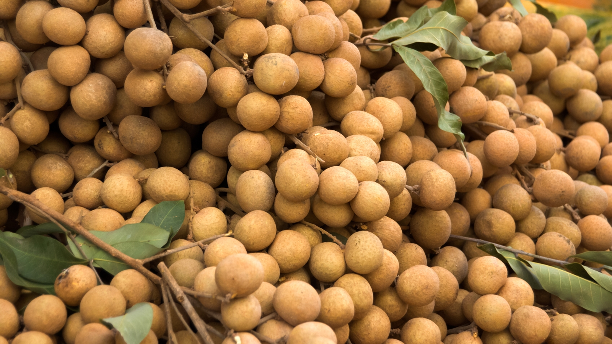

Kemangi adalah salah satu jenis sayuran yang biasanya digunakan daunnya sebagai pelengkap dalam beberapa jenis masakan di Indonesia khususnya.
Daun kemangi mempunyai aroma khas yang diyakini dapat menambah cita rasa pada makanan.
Menanam kemangi sangat mudah untuk dilakukan, penanaman bisa dilakukan di berbagai lahan, baik itu langsung ditanam di lahan, polybag maupun pot. Kemangi juga bisa ditanam di pekarangan rumah, sehingga anda dapat mencukupi kebutuhan kemangi untuk keluarga melalui tangan anda sendiri. Agar lebih sehat terutama untuk konsumsi pribadi, kemangi juga dapat ditanam secara organik.
Jika anda tertarik untuk menanamnya, berikut ini penjelasan lengkap mengenai cara menanam kemangi pada polybag secara organik.
1.PERSIAPAN BENIH
Sebelum melakukan penanaman langkah awal adalah mempersiapkan benih, pilihlah benih yang berkualitas unggul agar memperoleh tanaman kemangi yang berkualitas unggul pula.
Benih/biji kemangi dapat diperoleh dari bunga kemangi yang telah matang dari pohonnya dan dari tanaman yang telah tua. Biji kemangi yang telah siap untuk digunakan mempunyai ciri yaitu berwarna hitam, kering dan benih berasal dari tanaman yang sudah tua.
2.TAHAP PERSEMAIAN
Sebelum ditanam, benih kemangi perlu disemai terlebih dahulu. Proses persemaian diawali dengan mempersiapkan media semai, media semai yang digunakan cukup sederhana yaitu berupa komposisi tanah humus dan arang sekam dengan perbandingan 1:1, campurkan keduanya hingga merata.
Masukkan media semai tersebut ke dalam wadah persemaian berupa pot, polybag maupun baki persemaian, rapikan permukaannya.
Taburkan benih pada media semai tersebut secara merata, tutup tipis menggunakan tanah halus, kemudian siram persemaian hingga jenuh air.
Simpan persemaian di tempat teduh yang tidak terkena sinar matahari secara langsung selama proses persemaian.
Setelah 3 minggu dari persemaian benih kemangi sudah tumbuh menjadi bibit kemangi yang siap untuk dipindah tanam pada polybag.
3.TAHAP PENANAMAN
Siapkan media tanam dengan komposisi tanah, pupuk kandang dan arang sekam dengan perbandingan 1:1:1, campurkan semua bahan hingga merata.
Masukkan media tanam tersebut ke dalam polybag hingga hampir penuh, penanaman bibit siap dilakukan.
Penanaman bibit kemangi sebaiknya dilakukan pada sore hari
Sebelum bibit hasil persemaian dipindah tanam pada polybag sebaiknya disiram terlebih dahulu agar memudahkan dalam pencabutan.
Penanaman dilakukan dengan cara membuat lubang tanam pada media di polybag, cabut bibit dari persemaian dengan hati-hati, masukkan ke lubang tanam tersebut, tutup kembali dengan sedikit dipadatkan hingga bibit erat tertanam pada media. Kemudian siram hingga jenuh air.
Letakkan polybag di tempat teduh selama kurang lebih 1 minggu, agar tanaman tidak terlalu stres terkena sinar matahari secara langsung.
Perawatan tanaman kemangi selama penanaman hanya menggunakan pupuk organik cair (POC) dengan interval 2-3 minggu sekali bersamaan dengan penyiraman, dan tanpa tanpa menggunakan bahan kimia, sehingga lebih aman untuk dikonsumsi.
Pemanenan dapat dilakukan kapan saja asalkan daun sudah mulai tumbuh subur, sehingga tanaman bisa memunculkan percabangan baru dan kembali rimbun.
Demikian ulasan mengenai cara menanam kemangi, semoga artikel ini dapat menambah wawasan dan bermanfaat untuk anda.
Bayam Merah
Bayam merupakan salah satu jenis sayuran yang banyak digemari oleh masyarakat, hal ini dikarenakan bayam memiliki kandungan vitamin dan mineral yang lengkap diantaranya vitamin A,B,C dan K, selain itu mineral-mineral utama yang dimiliki bayam adalah magnesium, zat besi, asam folat, kalsium, potasium dan sebagainya.
Jika anda tertarik untuk membudidayakannya, berikut ini ulasan Cara Menanam Bayam Merah di Polybag :
Metode penanaman bayam yang akan kita uraikan disini adalah menggunakan metode penanaman organik, dimana sayuran organik ini lebih sehat dan aman untuk dikonsumsi.
1.PERSIAPAN BENIH
Sebelum anda memulai menanam bayam, hal penting yang harus anda lakukan adalah memilih benih bayam berkualitas unggul, karena benih merupakan salah satu hal yang menentukan keberhasilan budidayanya. Benih bayam saat ini dapat diperoleh dengan mudah di toko-toko pertanian.
Benih bayam tidak melalui proses penyemaian, melainkan langsung ditanam pada media tanam.
2.PERSIAPAN MEDIA TANAM
Siapkan wadah untuk media tanam berupa polybag, bisa juga menggunakan pot atau yang lainnya, yang terpenting adalah wadah tersebut memiliki lubang-lubang kecil agar air tidak menggenang.
Selanjutnya siapkan media tanam berupa campuran tanah humus, arang sekam dan pupuk kompos/pupuk kandang dengan perbandingan 1:1:1, bahan-bahan tersebut perlu diberikan pada media tanam supaya menghasilkan media tanam yang subur tanpa perlu melakukan pemupukan secara kimiawi. Kemudian masukkan media tanam tersebut ke dalam polybag.
3.TAHAP PENANAMAN
Taburkan benih bayam merah diatas media pada polybag secara merata, jangan terlalu padat, karena jika terlalu padat akan terjadi perebutan unsur hara dan sinar matahari sehingga menyebabkan pertumbuhannya lambat. Perkiraan untuk satu polybag dengan diameter 30 cm adalah sekitar 50 biji.
Taburkan abu sekam atau abu pembakaran di atasnya, tipis saja sacara merata, tujuannya untuk melindunginya dari hama seperti siput dan juga abu sekam ini mengandung belerang yang sangat tinggi sehingga dapat memacu pertumbuhan benih agar lebih cepat.
Siram menggunakan air secara hati-hati agar benih tidak larut terbawa air mengingat benih bayam bentuknya sangat kecil.
Untuk penyiraman berikutnya dilakukan secara rutin 2 kali sehari.
Setelah berumur 1 minggu dari penanaman, benih bayam sudah mulai tumbuh dengan memiliki 2 daun kecil.
Tanaman bayam merah yang ditanam secara organik sudah dapat dipanen setelah berumur 25 hari dan dilakukan bertahap dengan interval 5 hari sekali.
Pemanenan sebaiknya dilakukan dengan memetik pucuk-pucuknya saja sehingga tanaman bayam dapat bertunas dan tumbuh lagi.
Demikianlah ulasan mengenai cara menanam bayam merah di polybag secara organik, semoga artikel ini dapat menambah wawasan dan bermanfaat untuk anda.
.

Kelengkeng
Tanaman seledri bisa diperbanyak dengan cara generatif maupun vegetatif. Perbanyakan generatif yaitu perbanyakan tanaman seledri dengan cara menyemai biji atau benih, sedangkan perbanyakan vegetatif yaitu perbanyakan tanaman seledri dengan anakan atau seledri muda yang tumbuh pada rumpun seledri dewasa.
Perbanyakan vegetatif biasanya dilakukan pada budidaya seledri skala kecil, seperti banyak dilakukan oleh para pehoby karena dengan menanam anakan bisa lebih cepat panen dan tidak perlu melakukan proses penyemaian.
Sedangkan jika menanam seledri dalam skala luas atau sebagai usaha, pilihan terbaik adalah perbanyakan generatif yaitu dengan menyemai biji, karena dengan cara ini bisa mendapatkan benih seledri dalam jumlah banyak dengan mudah.
Adapun cara menanam seledri adalah sebagai berikut :
TAHAP PENYEMAIAN BENIH
Proses penyemaian benih seledri hingga siap dipindah tanam, memerlukan waktu 3 minggu sampai 1 bulan tergantung perlakuan awal saat melakukan proses penyemaian. Untuk itu dalam melakukan penyemaian harus dilakukan dengan benar agar benih lebih cepat tumbuh, berikut ini langkah-langkahnya :
1.Persiapan benih
Pilihlah benih seledri yang berkualitas unggul dan memiliki daya tumbuh yang tinggi. Benih seledri dapat didapatkan dengan mudah di toko-toko pertanian seperti SentraTani.com.
Untuk mempercepat pertumbuhan, terlebih dahulu rendam benih menggunakan air yang telah dicampur dengan pupuk hayati dengan dosis 1-2 ml/liter air selama kurang lebih 6 jam, atau jika tidak ada cukup rendam menggunakan air hangat kuku. Tiriskan benih dan diamkan selama satu malam.
2.Persiapan media semai
Media semai yang digunakan adalah tanah, pupuk kandang, arang sekam dan abu sekam dengan perbandingan 2:2:2:1, aduk dan campurkan hingga merata. Wadah persemaian yang akan digunakan adalah tray semai. Masukkan media ke dalam tray semai, kemudian siram hingga merata.
3.Penanaman biji
Tanam biji seledri dengan membuat lubang tanam terlebih dahulu pada tray semai dengan kedalaman 0,5 cm. Masukkan 3-5 biji ke dalam setiap lubang tanam, karena biji seledri sangat kecil untuk memudahkan dalam penanaman dapat menggunakan pinset. Setelah selesai penanaman, siram kembali persemaian. Untuk mencegah datangnya hama semut, taburkan abu sekam atau abu pembakaran kayu di atas persemaian. Tutup persemaian menggunakan plastik gelap atau kain basah dan simpan di tempat teduh. Setelah 3 minggu dari persemaian biasanya benih sud ah tumbuh 2-5 cm.
TAHAP PENANAMAN BIBIT/PINDAH TANAM
1.Persiapan lahan
Gemburkan lahan dan buat bedengan dengan lebar 100 cm, tinggi 25-30 cm dan panjang sesuaikan dengan kondisi lahan. Karena tanaman seledri tidak membutuhkan sinar matahari dalam waktu yang lama, terlebih pada musim kemarau, maka dari itu buatlah naungan di atas bedengan menggunakan pelepah daun kelapa, paranet atau sejenisnya. Naungan dibuat menghadap ke timur dengan tinggi tiang depan 1-1,5 cm sedangkan tiang bagian belakang 50-75 cm.
Berikan pupuk dasar pada bedengan menggunakan pupuk kandang sebanyak 1 kg/meter persegi, dengan cara menaburkannya di atas bedengan dan campurkan dengan tanah bedengan hingga merata. Rapikan kembali permukaan bedengan. Siram bedengan menggunakan air yang telah dicampur dengan pupuk hayati, dan bedengan siap ditanami.
2.Tahap penanaman
Siram bibit terlebih dahulu sebelum dipindah tanam tujuannya agar media mudah lepas dari tray semai dan proses pengambilan bibit menjadi lebih mudah.
Penanaman dilakukan dengan mencongkel bibit dari tray semai beserta medianya dengan jarak tanam 20×20 cm. Untuk memudahkan penataan dalam penanaman, buatlah garis alur di atas bedengan. Jika bibit dalam satu lubang pot tray lebih dari satu, jangan dipisahkan terlebih dahulu, pemisahan dilakukan setelah tanaman tumbuh agak besar. Setelah selesai penanaman lakukan penyiraman, penyiraman selanjutnya dilakukan sebanyak 2 kali sehari, lakukan penyiraman secukupnya saja asal lembab.
Demikian ulasan mengenai cara menanam seledri, semoga artikel ini dapat menambah wawasan dan bermanfaat untuk anda.